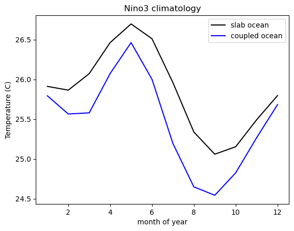
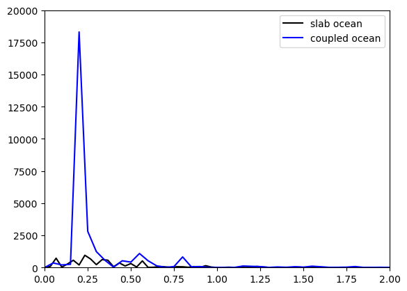
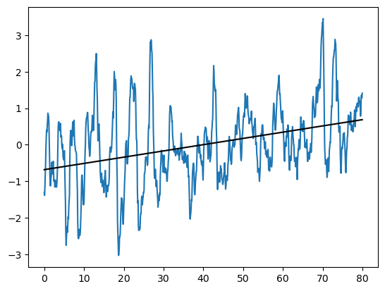
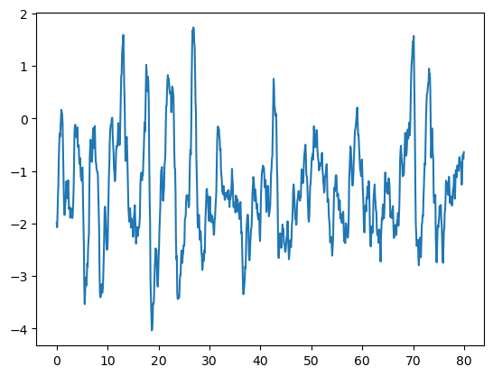
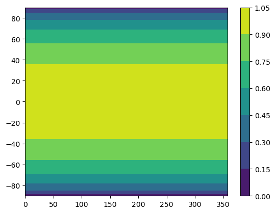

26. Coupled Dynamics in the CESM#
This notebook is an extension of The Climate Laboratory by Brian E. J. Rose, University at Albany. Notebook by Rachel H. White, University of British Columbia (https://www.eoas.ubc.ca/people/rachelwhite)
There are ‘Discussion points’ and ‘Exercises’ throughout these notebooks. You should come to class prepared to discuss your thoughts on the Discussion points.
Learning goals:
Be able to analyse coupled (atmosphere-ocean) dynamics in the CESM climate model data
Understand how the coupled system produces low-frequency climate variability, and consider the implications of this for understanding climate change
Evaluate differences in low-frequency climate variability between slab-ocean and fully coupled simulations
You need to be connected to the internet to run the code in this notebook
You can browse the available data through a web interface here:
http://thredds.atmos.albany.edu:8080/thredds/catalog.html
Within this folder called CESM archive, you will find another folder called som_input which contains all the input files.
26.1. Low frequency variability in the CESM#
import numpy as np
import matplotlib.pyplot as plt
import matplotlib
import xarray as xr
import scipy as sp
from scipy import stats
import Ngl
import cartopy
import cartopy.util
import cartopy.crs as ccrs
import cartopy.feature as cfeature
from eofs.standard import Eof
%matplotlib inline
---------------------------------------------------------------------------
ImportError Traceback (most recent call last)
Cell In[1], line 7
5 import scipy as sp
6 from scipy import stats
----> 7 import Ngl
8 import cartopy
9 import cartopy.util
File ~/mini310/envs/e440/lib/python3.10/site-packages/Ngl.py:1
----> 1 from ngl import __all__ as _ngl_all
2 from ngl import *
4 __all__ = []
File ~/mini310/envs/e440/lib/python3.10/site-packages/ngl/__init__.py:49
46 from distutils.sysconfig import get_python_lib
48 # PyNGL analysis functions
---> 49 from . import fplib
51 import sys
53 # import warnings module to warn about deprecated wrf functions
ImportError: dlopen(/Users/phil/mini310/envs/e440/lib/python3.10/site-packages/ngl/fplib.cpython-310-darwin.so, 0x0002): symbol not found in flat namespace '___aarch64_ldadd4_relax'
cesm_data_path = "http://thredds.atmos.albany.edu:8080/thredds/dodsC/CESMA/"
# Read in slab ocean data
atmfile = xr.open_dataset( cesm_data_path + 'som_1850_f19/concatenated/' + 'som_1850_f19.cam.h0.nc')
#atmfile = xr.open_dataset( cesm_data_path + "cpl_1850_f19/concatenated/cpl_1850_f19.cam.h0.nc")
atmfile
<xarray.Dataset>
Dimensions: (lev: 26, ilev: 27, time: 360, lat: 96, lon: 144, slat: 95,
slon: 144, nbnd: 2)
Coordinates:
* lev (lev) float64 3.545 7.389 13.97 23.94 ... 929.6 970.6 992.6
* ilev (ilev) float64 2.194 4.895 9.882 18.05 ... 956.0 985.1 1e+03
* time (time) object 0001-02-01 00:00:00 ... 0031-01-01 00:00:00
* lat (lat) float64 -90.0 -88.11 -86.21 -84.32 ... 86.21 88.11 90.0
* lon (lon) float64 0.0 2.5 5.0 7.5 10.0 ... 350.0 352.5 355.0 357.5
* slat (slat) float64 -89.05 -87.16 -85.26 ... 85.26 87.16 89.05
* slon (slon) float64 -1.25 1.25 3.75 6.25 ... 351.2 353.8 356.2
Dimensions without coordinates: nbnd
Data variables: (12/128)
hyam (lev) float64 ...
hybm (lev) float64 ...
hyai (ilev) float64 ...
hybi (ilev) float64 ...
P0 float64 ...
date (time) int32 ...
... ...
VTH3d (time, ilev, lat, lon) float32 ...
VU (time, lev, lat, lon) float32 ...
VV (time, lev, lat, lon) float32 ...
W2d (time, lat, lon) float32 ...
WTH3d (time, ilev, lat, lon) float32 ...
Z3 (time, lev, lat, lon) float32 ...
Attributes: (12/16)
Conventions: CF-1.0
source: CAM
case: som_1850_f19
title: UNSET
logname: br546577
host: snow-02.rit.alba
... ...
history: Tue Feb 26 17:26:00 2019: ncrcat atm/his...
NCO: 4.6.8
nco_openmp_thread_number: 1
DODS.strlen: 8
DODS.dimName: chars
DODS_EXTRA.Unlimited_Dimension: timeThis data is a concatenated dataset of monthly data - we expect that it’s monthly data because of the file name - with the CESM model the ‘h0’ in the file name is short for ‘history file 0’. The default is for ‘history file 0’ to be monthly data. You can change the CESM model to output additional history files (h1, h2, h3…) at a different time resolution. The default for ‘h1’ is daily data. If you are interested in looking at storm tracks, and their influence on heat transport and surface weather, you might have h1 be outputting daily data for just a few variables of interest to eddy dynamics (winds, geopotential height), and h2 to be outputting 6-hourly data for a few 2D fields such as precipitation, surface temperature and surface pressure (outputting 6-hourly data on 3D fields will take up a lot of space very quickly).
We can confirm that it is monthly data by looking at the times in the file above. Compare this to the h1 files that are also available from this thredds directory:
atmfileh1_0001 = xr.open_dataset(cesm_data_path + 'som_1850_f19/atm/hist/' +
'som_1850_f19.cam.h1.0001-01-01-00000.nc')
#atmfile = xr.open_dataset( cesm_data_path + "cpl_1850_f19/concatenated/cpl_1850_f19.cam.h0.nc")
atmfileh1_0001
<xarray.Dataset>
Dimensions: (lev: 26, ilev: 27, time: 365, lat: 96, lon: 144, slat: 95,
slon: 144, nbnd: 2)
Coordinates:
* lev (lev) float64 3.545 7.389 13.97 23.94 ... 929.6 970.6 992.6
* ilev (ilev) float64 2.194 4.895 9.882 18.05 ... 956.0 985.1 1e+03
* time (time) object 0001-01-01 00:00:00 ... 0001-12-31 00:00:00
* lat (lat) float64 -90.0 -88.11 -86.21 -84.32 ... 86.21 88.11 90.0
* lon (lon) float64 0.0 2.5 5.0 7.5 10.0 ... 350.0 352.5 355.0 357.5
* slat (slat) float64 -89.05 -87.16 -85.26 ... 85.26 87.16 89.05
* slon (slon) float64 -1.25 1.25 3.75 6.25 ... 351.2 353.8 356.2
Dimensions without coordinates: nbnd
Data variables: (12/37)
hyam (lev) float64 ...
hybm (lev) float64 ...
hyai (ilev) float64 ...
hybi (ilev) float64 ...
P0 float64 ...
date (time) int32 ...
... ...
PRECC (time, lat, lon) float32 ...
PRECL (time, lat, lon) float32 ...
PSL (time, lat, lon) float32 ...
TREFHT (time, lat, lon) float32 ...
TREFHTMN (time, lat, lon) float32 ...
TREFHTMX (time, lat, lon) float32 ...
Attributes: (12/13)
Conventions: CF-1.0
source: CAM
case: som_1850_f19
title: UNSET
logname: br546577
host: snow-02.rit.alba
... ...
revision_Id: $Id$
initial_file: /data/rose_scr/cesm_inputdata/atm/cam/in...
topography_file: /data/rose_scr/cesm_inputdata/atm/cam/to...
DODS.strlen: 8
DODS.dimName: chars
DODS_EXTRA.Unlimited_Dimension: timeDiscussion: What is the time resolution of the h1 files?
As discussed in Hartmann chapter 8, single point correlation maps are one way of looking at the variability - these show how values of a variables at places all around the globe vary together with that variable at a particular point; that is, they show spatial patterns of variability. Let’s try to reproduce figure 8.4b.
# First calculate new arrays that hold seasonal data
Z3_seas = {}
for label,data in atmfile.Z3.groupby('time.season'):
Z3_seas[label] = data
PS_seas = {}
for label,data in atmfile.PS.groupby('time.season'):
PS_seas[label] = data
# First we want to convert to pressure levels
def hybrid2pres(filein,varin,PSin,plevels,timedim=True):
# the parameters hyam and hybm are parameters used to calculate the pressure from the level value
hyam = filein['hyam']
hybm = filein['hybm']
p0mb = filein['P0']/100.0
varpres = Ngl.vinth2p(varin, hyam, hybm, plevels, PSin, 1, p0mb, 1, False)
# This has set values below the surface to 1E30. We want these to be nan:
varpres = np.where(varpres>=1E30,np.nan,varpres)
# Create xarray from this numpy ndarray:
if timedim:
varpres_xr = xr.DataArray(varpres,
dims=['time','plev','lat','lon'],
coords={'time':varin.time,'plev':plevels,
'lat':varin.lat,'lon':varin.lon})
else:
varpres_xr = xr.DataArray(varpres,
dims=['plev','lat','lon'],
coords={'plev':plevels,
'lat':varin.lat,'lon':varin.lon})
return(varpres_xr)
# we're interested in the 500mb level, so we can just select that level
# For DJF:
Z500_DJF = hybrid2pres(atmfile,Z3_seas['DJF'],PS_seas['DJF'],[500])
---------------------------------------------------------------------------
NameError Traceback (most recent call last)
Cell In[6], line 28
24 return(varpres_xr)
26 # we're interested in the 500mb level, so we can just select that level
27 # For DJF:
---> 28 Z500_DJF = hybrid2pres(atmfile,Z3_seas['DJF'],PS_seas['DJF'],[500])
Cell In[6], line 8, in hybrid2pres(filein, varin, PSin, plevels, timedim)
5 hybm = filein['hybm']
6 p0mb = filein['P0']/100.0
----> 8 varpres = Ngl.vinth2p(varin, hyam, hybm, plevels, PSin, 1, p0mb, 1, False)
9 # This has set values below the surface to 1E30. We want these to be nan:
10 varpres = np.where(varpres>=1E30,np.nan,varpres)
NameError: name 'Ngl' is not defined
# Select the point that we want to calculate correlations from: (fig. 8.4c)
# Estimate that P is at: 45N, 200E (
# Warning - when using new datasets you should always check whether the
# longitudes are 0-360, not -180 to 180)
# Because the latitudes are not spaced such that there is a grid box centred on 45N, if
# we use .sel(lat=45) it will fail:
# pointvals = Z500_DJF.sel(lat=45).sel(lon=200)
# We can either look at the data and select a latitude value that does exist,
# or ask xarray to just pick the nearest point to the value we have asked for:
pointvals = Z500_DJF.sel(lat=45,method='nearest').sel(lon=200)
---------------------------------------------------------------------------
NameError Traceback (most recent call last)
Cell In[7], line 13
1 # Select the point that we want to calculate correlations from: (fig. 8.4c)
2 # Estimate that P is at: 45N, 200E (
3 # Warning - when using new datasets you should always check whether the
(...)
11 # We can either look at the data and select a latitude value that does exist,
12 # or ask xarray to just pick the nearest point to the value we have asked for:
---> 13 pointvals = Z500_DJF.sel(lat=45,method='nearest').sel(lon=200)
NameError: name 'Z500_DJF' is not defined
# Now correlate this timeseries with that from a nearby gridpoint:
tocorr = Z500_DJF.sel(lat=45,method='nearest').sel(lon=210)
#print(pointvals.squeeze())
corr,r = sp.stats.pearsonr(pointvals.squeeze(),tocorr.squeeze())
print(corr,r)
# We can see there is a very strong correlation, that has a very low p-value (r; note
# this assumes your data are normally distrubuted which may not be the case!)
---------------------------------------------------------------------------
NameError Traceback (most recent call last)
Cell In[8], line 2
1 # Now correlate this timeseries with that from a nearby gridpoint:
----> 2 tocorr = Z500_DJF.sel(lat=45,method='nearest').sel(lon=210)
3 #print(pointvals.squeeze())
4 corr,r = sp.stats.pearsonr(pointvals.squeeze(),tocorr.squeeze())
NameError: name 'Z500_DJF' is not defined
# To build the 1-point correlation maps we can repeat this for every point
nlats = len(Z500_DJF.lat)
nlons = len(Z500_DJF.lon)
corrarray = np.zeros([nlats,nlons],float)
rarray = np.zeros([nlats,nlons],float)
for ilat in range(0,nlats):
for ilon in range(0,nlons):
# if we use isel instead of sel, we select on indices, instead of values:
tocorr = Z500_DJF.isel(lat=ilat).isel(lon=ilon)
corrarray[ilat,ilon],rarray[ilat,ilon] = sp.stats.pearsonr(pointvals.squeeze(),tocorr.squeeze())
---------------------------------------------------------------------------
NameError Traceback (most recent call last)
Cell In[9], line 2
1 # To build the 1-point correlation maps we can repeat this for every point
----> 2 nlats = len(Z500_DJF.lat)
3 nlons = len(Z500_DJF.lon)
5 corrarray = np.zeros([nlats,nlons],float)
NameError: name 'Z500_DJF' is not defined
# We can now plot this 1-point correlation array for comparison with fig. 8.4c in Hartmann
toplot = corrarray
ncols=1
nrows=1
n=1
title='DJF 1-point correlation map Z500 monthly data'
proj=ccrs.Orthographic(central_latitude=90)
ax = plt.subplot(ncols,nrows,n,projection=proj)
ax.coastlines()
gl = ax.gridlines(crs=ccrs.PlateCarree())
cp = plt.contourf(Z500_DJF.lon,Z500_DJF.lat,toplot,levels=np.arange(-1,1.01,0.2),extend='both',
transform=ccrs.PlateCarree(),cmap='RdBu_r')
# Add colorbar
cb = plt.colorbar(cp)
plt.title(title)
plt.show()
---------------------------------------------------------------------------
NameError Traceback (most recent call last)
Cell In[10], line 2
1 # We can now plot this 1-point correlation array for comparison with fig. 8.4c in Hartmann
----> 2 toplot = corrarray
3 ncols=1
4 nrows=1
NameError: name 'corrarray' is not defined
It is often useful to mask your data for statistical significance, and this can be done fairly easily with python:
# We can now plot this 1-point correlation array for comparison with fig. 8.4c in Hartmann
# Set the p-value for which we want to show the data:
p=0.05
toplot = corrarray
mask = np.where(rarray<p,1.0,0.0)
ncols=1
nrows=1
n=1
title='DJF 1-point correlation map Z500 monthly data'
proj=ccrs.Orthographic(central_latitude=90)
ax = plt.subplot(nrows,ncols,n,projection=proj)
ax.coastlines()
gl = ax.gridlines(crs=ccrs.PlateCarree())
cp = plt.contourf(Z500_DJF.lon,Z500_DJF.lat,toplot,levels=np.arange(-1,1.01,0.2),extend='both',
transform=ccrs.PlateCarree(),cmap='RdBu_r')
cb = plt.colorbar(cp)
# Choose to hatch where the data is NOT statistically significant at our chosen level
cp = plt.contourf(Z500_DJF.lon,Z500_DJF.lat,mask,levels=[0,0.99],hatches=['/',None],
transform=ccrs.PlateCarree(),colors='none')
plt.title(title + '; p<' + str(p))
plt.show()
---------------------------------------------------------------------------
NameError Traceback (most recent call last)
Cell In[11], line 6
1 # We can now plot this 1-point correlation array for comparison with fig. 8.4c in Hartmann
2
3 # Set the p-value for which we want to show the data:
4 p=0.05
----> 6 toplot = corrarray
7 mask = np.where(rarray<p,1.0,0.0)
9 ncols=1
NameError: name 'corrarray' is not defined
Exercise: Repeat this analysis for a 1-point correlation for point A on Figure 8.4d. Add the letters A and P onto these figures in the correct places to illustrate the point used for the correlations. ##Discussion:** _Why are we only looking at figure 8.4c and 8.4d. What are the additional steps required to reproduce figures 8.4a and b?
26.2. Slab ocean and coupled ocean low frequency variability#
# Read in fully coupled ocean data
atmfile_cpl = xr.open_dataset( cesm_data_path + 'cpl_1850_f19/concatenated/' + 'cpl_1850_f19.cam.h0.nc')
#atmfile = xr.open_dataset( cesm_data_path + "cpl_1850_f19/concatenated/cpl_1850_f19.cam.h0.nc")
atmfile_cpl
<xarray.Dataset>
Dimensions: (lev: 26, ilev: 27, time: 240, lat: 96, lon: 144, slat: 95,
slon: 144, nbnd: 2)
Coordinates:
* lev (lev) float64 3.545 7.389 13.97 23.94 ... 929.6 970.6 992.6
* ilev (ilev) float64 2.194 4.895 9.882 18.05 ... 956.0 985.1 1e+03
* time (time) object 0001-02-01 00:00:00 ... 0021-01-01 00:00:00
* lat (lat) float64 -90.0 -88.11 -86.21 -84.32 ... 86.21 88.11 90.0
* lon (lon) float64 0.0 2.5 5.0 7.5 10.0 ... 350.0 352.5 355.0 357.5
* slat (slat) float64 -89.05 -87.16 -85.26 ... 85.26 87.16 89.05
* slon (slon) float64 -1.25 1.25 3.75 6.25 ... 351.2 353.8 356.2
Dimensions without coordinates: nbnd
Data variables: (12/128)
hyam (lev) float64 ...
hybm (lev) float64 ...
hyai (ilev) float64 ...
hybi (ilev) float64 ...
P0 float64 ...
date (time) int32 ...
... ...
VTH3d (time, ilev, lat, lon) float32 ...
VU (time, lev, lat, lon) float32 ...
VV (time, lev, lat, lon) float32 ...
W2d (time, lat, lon) float32 ...
WTH3d (time, ilev, lat, lon) float32 ...
Z3 (time, lev, lat, lon) float32 ...
Attributes: (12/16)
Conventions: CF-1.0
source: CAM
case: cpl_1850_f19
title: UNSET
logname: br546577
host: snow-30.rit.alba
... ...
history: Tue Feb 26 17:17:15 2019: ncrcat atm/his...
NCO: 4.6.8
nco_openmp_thread_number: 1
DODS.strlen: 8
DODS.dimName: chars
DODS_EXTRA.Unlimited_Dimension: timeExercise: Calculate the single point correlation maps for the coupled data, and compare to the slab ocean plots. Discussion: Are these plots significantly different? Is this what you would expect? Why/why not?
26.3. The El Nino Southern Oscillation#
If you are not familiar with the El Nino Southern Oscillation (ENSO) I suggest you read through section 8.3 of the Hartmann book before attempting this section.
First, let’s check that the model correctly simulates the average zonally asymmetric circulation patterns in the tropics (for comparison with figure 8.9).
OMEGA is the variable containing the vertical (pressure) velocity, in Pa/s
# Because there isn't a grid box centred on 0, we take an average across the equator. We first check that
# this is symmetrical about the equator:
print(atmfile.sel(lat=slice(-2,2)).lat)
omega = atmfile.OMEGA.sel(lat=slice(-2,2)).mean(dim='time')
PS = atmfile.PS.sel(lat=slice(-2,2)).mean(dim='time')
omega_cpl = atmfile_cpl.OMEGA.sel(lat=slice(-2,2)).mean(dim='time')
PS_cpl = atmfile_cpl.PS.sel(lat=slice(-2,2)).mean(dim='time')
# convert to pressure levels
pnew = [1000.,850.,700.,600.,500.,400.,300.,250.,200.,150.,100.,70.,50.,30.,20.,10.,5.]
omega_pres = hybrid2pres(atmfile,omega,PS,pnew,timedim=False).mean(dim='lat')
omega_cpl_pres = hybrid2pres(atmfile_cpl,omega_cpl,PS_cpl,pnew,timedim=False).mean(dim='lat')
<xarray.DataArray 'lat' (lat: 2)>
array([-0.947368, 0.947368])
Coordinates:
* lat (lat) float64 -0.9474 0.9474
Attributes:
long_name: latitude
units: degrees_north
---------------------------------------------------------------------------
NameError Traceback (most recent call last)
Cell In[13], line 13
10 # convert to pressure levels
11 pnew = [1000.,850.,700.,600.,500.,400.,300.,250.,200.,150.,100.,70.,50.,30.,20.,10.,5.]
---> 13 omega_pres = hybrid2pres(atmfile,omega,PS,pnew,timedim=False).mean(dim='lat')
14 omega_cpl_pres = hybrid2pres(atmfile_cpl,omega_cpl,PS_cpl,pnew,timedim=False).mean(dim='lat')
Cell In[6], line 8, in hybrid2pres(filein, varin, PSin, plevels, timedim)
5 hybm = filein['hybm']
6 p0mb = filein['P0']/100.0
----> 8 varpres = Ngl.vinth2p(varin, hyam, hybm, plevels, PSin, 1, p0mb, 1, False)
9 # This has set values below the surface to 1E30. We want these to be nan:
10 varpres = np.where(varpres>=1E30,np.nan,varpres)
NameError: name 'Ngl' is not defined
# Plot the equatorial cross-section
omega_pres.plot.contour(levels = np.arange(0,0.1,0.02),colors='r')
omega_pres.plot.contour(levels = np.arange(-0.1,0,0.02),colors='b',linestyles='-')
plt.yscale('log')
# invert the axis so it represents height, but shows pressure
plt.gca().invert_yaxis()
# set the top and bottom pressure of the plot
plt.ylim(1000,100)
plt.title('Slab ocean equatorial vertical pressure velocity, annual mean')
plt.show()
omega_cpl_pres.plot.contour(levels = np.arange(0,0.1,0.02),colors='r')
omega_cpl_pres.plot.contour(levels = np.arange(-0.1,0,0.02),colors='b',linestyles='-')
plt.yscale('log')
# invert the axis so it represents height, but shows pressure
plt.gca().invert_yaxis()
# set the top and bottom pressure of the plot
plt.ylim(1000,100)
plt.title('Coupled ocean equatorial vertical pressure velocity, annual mean')
plt.show()
---------------------------------------------------------------------------
NameError Traceback (most recent call last)
Cell In[14], line 2
1 # Plot the equatorial cross-section
----> 2 omega_pres.plot.contour(levels = np.arange(0,0.1,0.02),colors='r')
3 omega_pres.plot.contour(levels = np.arange(-0.1,0,0.02),colors='b',linestyles='-')
4 plt.yscale('log')
NameError: name 'omega_pres' is not defined
Discussion: Compare the model results to the observations shown in the Hartmann textbook and to each other.
Now let’s calculate indices of the ENSO.
# We can calculate the Nino3 index in these models and compare the variability.
# Convert from K to C on the way
Nino3 = atmfile.TS.sel(lat=slice(-5,5),lon=slice(210,270)).mean(dim=['lat','lon']) - 273.15
Nino3_cpl = atmfile_cpl.TS.sel(lat=slice(-5,5),lon=slice(210,270)).mean(dim=['lat','lon']) - 273.15
# Calculate climatologies and compare
def create_clim(indata):
nyears = int(len(indata.time)/12)
# reshape data
indata_years = np.reshape(indata.values,(nyears,12))
clim = indata_years.mean(axis=0)
return(clim)
Nino3_clim = create_clim(Nino3)
Nino3_cpl_clim = create_clim(Nino3_cpl)
# Plot to compare the Nino3 climatologies of the two models.
plt.plot(np.arange(1,13),Nino3_clim,label='slab ocean',color='k')
plt.plot(np.arange(1,13),Nino3_cpl_clim,label='coupled ocean',color='b')
plt.legend()
plt.xlabel('month of year')
plt.ylabel('Temperature (C)')
plt.title('Nino3 climatology')
plt.show()

We can see that both models follow a similar climatology in the Nino3 index, which is largely driven by the seasonal cycle. It makes sense that both oceans reproduce the seasonal cycle in surface temperature as this is, at least in tropics, strongly forced by incoming solar radiation. Note that this seasonal cycle shows two peaks (Dec/Jan and May) and two troughs (Feb and Sep) per year.
Discussion: Why does the climatology of tropical SSTs show two peaks per year? Is that what you would expect to see in observations, or do you think there is something wrong with this model?
# Now calculate the anomalies from this climatology:
# need to repeat the climatology for each year in order to subtract arrays
nyears = 30
nyears_cpl=20
Nino3_clim_all = np.tile(Nino3_clim,nyears)
Nino3_anoms = Nino3 - Nino3_clim_all
Nino3_cpl_clim_all = np.tile(Nino3_cpl_clim,nyears_cpl)
Nino3_cpl_anoms = Nino3_cpl - Nino3_cpl_clim_all
Exercise: Create a plot to compare the anomalies in the slab ocean and fully coupled ocean experiments. Note that the coupled ocean has only 20 years, while the slab ocean has 30.
Discussion: Which model has more variability? Is this what you would expect? Which model has more low frequency variability? What does this tell you about variability of ocean surface tempertures in the Nino3 region?
Rather than estimating the variability, we can calculate the power specturm using fast fourier transforms.
# Plot a simple (non-normalized) power density spectrum using Fourier analysis
Nino3_fft = np.fft.rfft(Nino3_anoms)
Nino3_powerspec = np.square(np.abs(Nino3_fft))
sampling_rate = 12 # cycles per year
frequency = np.linspace(0, sampling_rate/2, len(Nino3_powerspec))
plt.plot(frequency,Nino3_powerspec,color='k',label='slab ocean')
# Repeat for coupled experiment
Nino3_cpl_fft = np.fft.rfft(Nino3_cpl_anoms)
Nino3_cpl_powerspec = np.square(np.abs(Nino3_cpl_fft))
sampling_rate = 12 # cycles per year
frequency = np.linspace(0, sampling_rate/2, len(Nino3_cpl_powerspec))
plt.plot(frequency,Nino3_cpl_powerspec,color='b',label='coupled ocean')
plt.ylim(0,20000)
plt.xlim(0,2)
plt.legend()
plt.show()

Discussion: Do the two models simulate any realistic ENSO variance? What are the differences between the 2 spectra shown above and between that shown in Fig. 8.12 in the Hartmann book for the observations? Think about why these differences might come about, and what they tell us about the models?
If we want a more detailed spectra for the coupled ocean we need more than 20 years. You can find a simulation of 80 years with CO2 ramping here:
atmfile_cpl_ramp = xr.open_dataset( cesm_data_path +
'cpl_CO2ramp_f19/concatenated/' + 'cpl_CO2ramp_f19.cam.h0.nc')
This starts off at year 20 of the cpl_1850_f19 simulation, and ramps up CO2, similar to the real World, which gives us a test of climate change as well. This means we also need to remove a linear trend from the TS data before calculating the power spectrum.
Nino3_cpl_ramp = (atmfile_cpl_ramp.TS
.sel(lat=slice(-5,5),lon=slice(210,270))
.mean(dim=['lat','lon']) - 273.15)
Nino3_cpl_ramp_clim = create_clim(Nino3_cpl_ramp)
nyears_cpl_ramp=80
Nino3_cpl_anoms = Nino3_cpl_ramp - np.tile(Nino3_cpl_ramp_clim,nyears_cpl_ramp)
# Calculate the linear slope using regression:
x = np.arange(0,80,1/12)
regress = sp.stats.linregress(x,Nino3_cpl_anoms)
# Plot anomalies and linear regression
plt.plot(x,Nino3_cpl_anoms)
plt.plot(x,regress.slope*x + regress.intercept,color='k')
plt.show()
# Now remove this linear slope
Nino3_cpl_anoms_detrend = Nino3_cpl_anoms - regress.slope*x + regress.intercept
plt.plot(x,Nino3_cpl_anoms_detrend)
plt.show()


Exercise: Calculate and plot the power spectrum for these de-trended data for comparison with the 20 year dataset and the observations in the Hartmann book.
# Plot a simple (non-normalized) power density spectrum using Fourier analysis
26.4. ENSO and the PDO#
We can now look at the spatial signal of the ENSO using Empirical Orthogonal Functions (EOFs), a form of Principal Component Analysis. This webpage: https://climatedataguide.ucar.edu/climate-data-tools-and-analysis/empirical-orthogonal-function-eof-analysis-and-rotated-eof-analysis provides a brief overview of EOFs for those not familiar with them. For those who are familiar with them, there is a key sentence here: EOF analysis is not based on physical principles. This means that just because you find an EOF pattern in your data does NOT mean there is necessarily a physical process that pattern represents. EOFs are a useful tool, but need to be combined with physical understanding. For a more in-depth review, see: https://rmets.onlinelibrary.wiley.com/doi/epdf/10.1002/joc.1499
indata=atmfile_cpl_ramp.TS - 273.15
# Mask over land values
landmask = np.where(atmfile_cpl_ramp.LANDFRAC>0,np.nan,1)
SST = indata * landmask
nlons = len(SST.lon)
nlats = len(SST.lat)
nyears_cpl_ramp = int(len(SST.time)/12)
monthly = np.reshape(indata.values,(nyears_cpl_ramp,12,nlats,nlons))
clim = monthly.mean(axis=0)
print(clim.shape)
global_SST_anoms = SST - np.tile(clim,[nyears_cpl_ramp,1,1])
(12, 96, 144)
Note: we are using surface temperature from the atmospheric files, rather than the surface temperature from the ocean files: this is because the ocean data are on a different grid, that would require more complex re-gridding
We are going to calculate EOFs using the EOF package written by Andrew Dawson: https://github.com/ajdawson/eofs
I recommend trying to follow the example here: https://github.com/ajdawson/eofs/blob/master/examples/standard/sst_example.py to find the ENSO signal in our temperature anomalies. You will have to make some changes due to changes in syntax from older version of python.
If you get stuck, have a look at the code below.
# Create an EOF solver to do the EOF analysis. Square-root of cosine of
# latitude weights are applied before the computation of EOFs.
coslat = np.cos(np.deg2rad(global_SST_anoms.lat))
wgts = np.sqrt(coslat)
wgts_tile = np.transpose(np.tile(wgts,(nlons,1)))
# Check weights:
plt.contourf(global_SST_anoms.lon,global_SST_anoms.lat,wgts_tile)
plt.colorbar()
# Calculate EOFs
solver = Eof(global_SST_anoms.values, weights=wgts_tile)
---------------------------------------------------------------------------
NameError Traceback (most recent call last)
Cell In[25], line 11
9 plt.colorbar()
10 # Calculate EOFs
---> 11 solver = Eof(global_SST_anoms.values, weights=wgts_tile)
NameError: name 'Eof' is not defined

eof1 = solver.eofsAsCorrelation(neofs=1)
pc1 = solver.pcs(npcs=1, pcscaling=1)
# Plot the leading EOF expressed as correlation in the Pacific domain.
clevs = np.linspace(-1, 1, 11)
ax = plt.axes(projection=ccrs.PlateCarree(central_longitude=190))
fill = ax.contourf(global_SST_anoms.lon, global_SST_anoms.lat, eof1.squeeze(), clevs,
transform=ccrs.PlateCarree(), cmap=plt.cm.RdBu_r)
ax.add_feature(cfeature.LAND, facecolor='w', edgecolor='k')
cb = plt.colorbar(fill, orientation='horizontal')
cb.set_label('correlation coefficient', fontsize=12)
plt.title('EOF1 expressed as correlation', fontsize=16)
# Plot the leading PC time series.
plt.figure()
months = range(1, 12*80+1)
plt.plot(months, pc1, color='b', linewidth=2)
plt.axhline(0, color='k')
plt.title('PC1 Time Series')
plt.xlabel('Year')
plt.ylabel('Normalized Units')
plt.ylim(-3, 3)
plt.show()
---------------------------------------------------------------------------
NameError Traceback (most recent call last)
Cell In[26], line 1
----> 1 eof1 = solver.eofsAsCorrelation(neofs=1)
2 pc1 = solver.pcs(npcs=1, pcscaling=1)
4 # Plot the leading EOF expressed as correlation in the Pacific domain.
NameError: name 'solver' is not defined
Discussion: What is the main pattern that we see in the first EOF? Is this the ENSO signal? If not, what is it?
Exercise: Repeat the analysis above with the extra step required to get the ENSO signal as the first EOF
Exercise: We have already seen that the power spectrum of the Nino3 variability in the slab ocean model does not match observations. Have a look at the first EOF of SST in the slab ocean model. What does this tell you about the spatial distribution of variability in the slab ocean model?
26.4.1. Further Exploration#
Open-ended exercise: Read section 8.4 of the Hartmann book. Use the tools provided in this notebook to create one or two more plots exploring the variability in the CESM data. You could:
look at the effect of CO2 on the ENSO spectra and spatial distribution by comparing the first and last years of the cpl_CO2_ramp experiment. You could also look at the CO2 rampdown experiment in the Thredds catalogue
Look at variability in different regions, investigating, for example, the PDO, or the AMO.
Look at differences between in ENSO, PDO, AMO characteristics for different 30 year chunks of the 80 year simulations - what can this teach you about our confidence of low frequency variability from relatively short observation records?
To better understand low-frequency variability, particularly multi-decadal variability, we need more data than we have from observations. One way to get these data is by running ensembles of climate models. This is the theme of the next notebook, which will introduce you to the CESM Large Ensemble.